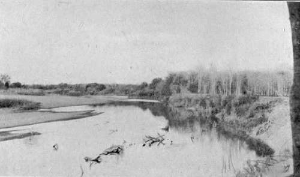

Chapter VII. Memories Of Big Game Hunting
Description
This section is from the book "Wild Life In Central Africa", by Denis D. Lyell. Also available from Amazon: Wild Life in Central Africa.
Chapter VII. Memories Of Big Game Hunting
Old shooting experiences a pleasant memory—Game plentiful near the Luangwa River—Giraffes—Leopard seen—Lion followed into thick grass—Bird life on the Luangwa River—Vultures spotting game— Natives eating rotten meat—Crocodiles—a native taken by a crocodile —Fish and their poor eating qualities—Mushrooms and other edible fungi—Shoot a fine impala ram—Waterbuck plentiful—Bad climate near the Luangwa River—Great heat and thunderstorms—Wound a bull elephant—He charges and is killed—Garden-feeding elephants—Hit a tuskless bull elephant—a cow proves nasty—Thorn thickets inhabited by game—Follow elephants which run off and swim the Luangwa River—Kill six hippo—Track and shoot a bull rhino—Close quarters with a rhino—a good rhino horn—Go a trip to the Chiromo Marsh—Follow a wounded buffalo bull for six hours and kill him— The haunt of the inyala antelope in Nyasaland—Kill a very fine reedbuck ram—Chiromo district a good game country—Thorn country and the Tuchila Plain—Shoot a large eland bull—Bag some sable antelope—Difficulty of preserving specimens in damp weather—a good kudu specimen spoiled by a native—Thorns and sharp grass—Shooting in bare legs—Wound, track, and kill a hartebeest bull.
My memory often carries me back to some lovely game country and the exciting sport I experienced there, and one of the most lovely of them all was the vicinity of the Luangwa River in North-Eastern Rhodesia. The Luangwa is a very large river, especially in the rains, as it drains avast extent of country. In the dry season many of the smaller rivers and streams dry up and when seeing them at this time it is difficult to believe that they can develop into rushing torrents of great force. I am now living on the head waters of the Bua River which is usually a quietly running stream about 30ft. across. As I write this (March 23, 1913) after about twelve hours' steady rain it has risen tremendously and is now in spate, in places about 300ft. across, and a small bridge I made was carried away. When the rain stops this small river goes down almost as quickly as it rises.
In 1905 I spent a year at a place marked on the map as Mzazas, which was right in the centre of some of the best game country left in Africa. It was right opposite one of the two game reserves existing in North-Eastern Rhodesia. This reserve was made to preserve one or two herds of giraffe which inhabited that country. The Administrator of North-Eastern Rhodesia at that time was the late Mr. Robert Codrington, and he most kindly gave me permission to shoot in the reserve on condition that I did not interfere with the giraffes, a promise I kept. I saw their fresh spoor on many occasions, and once got a glimpse of them running off. As they were the first giraffes I had ever seen, I was interested in watching them for the short time they were visible.
I have since seen several herds of giraffe in British East Africa, where a bull can be shot on a special licence of £10, although somehow I do not have the ambition to shoot such a harmless and beautiful animal, and there is very little interest in the trophy of the mounted head and neck, or the tail.
Near Mzazas elephants were rather scarce, but rhinos were fairly plentiful, as the bush is full of thorn trees, the staple food of these animals. Most of the commoner game was abundant, and water-buck and impala swarmed. The waterbuck is one of the most beautifully formed antelopes of Africa, as he has a very fine carriage, especially when he is startled, and holds up his head and neck. The meat is poor eating, particularly that of an old bull.
I was never tired of watching the herds of graceful impala, and often have I lain and watched them feeding and resting. They made a lovely picture of animal life amongst the green tropical vegetation growing on both sides of the river. The most noticeable tree was the mopani, always found near large rivers in Central Africa.
The Luangwa River, North-Eastern Rhodesia
Roan antelopes were plentiful, but I never saw any sable near Mzazas. Zebra and hartebeest were in numbers, and puku, reedbuck, oribi, and duikers could be seen here and there.
Hippo were to be seen in the river occasionally, and buffalo, although they did not exist quite close to where I was living, were to be found in other parts of the Luangwa Valley, not more than a day's journey off.
Mzazas has a name as a good place for lions, but my usual bad luck with these animals seems to have followed me, for though hardly a day passed without my tramping through the bush, I never actually saw one of them near Mzazas.
On one occasion I heard two break away out of a patch of thick grass, and I ran round hoping for a shot, but by this time they had gone, and I spent hours on the spoor without any result.
There were a good many bushbuck, and occasionally I saw and shot warthogs. Once I got the glimpse of a bolting leopard which had been feeding on an impala fawn he had killed, but he was soon out of sight, just like a flash of yellow light.
One day I heard pig in some long grass, almost up to my neck, and seeing an anthill near, I went to it so as to try to see into the grass. There was a large tree which had a big branch overhanging the anthill. Just as I reached the top I saw a leopard jump from this branch and disappear, and, as it frightened the pig, I got a shot at neither.
Leopards are most wary animals, and I consider it is the purest fluke if a man gets a good chance at one. They nearly always lie up in thick grass or bush, and their hearing must be most acute, for they go off silently if disturbed at any distance ; if come on close, all one sees is a yellow flash, and they are off for good. If lions and leopards would only stand and growl at the intruder it would be much better, as one would have a good chance of putting in a deadly shot, but they refrain from doing this unless they are wounded, and then instead of standing in the open they probably growl from behind a bush or patch of grass, where one cannot see anything definite to shoot at.
Continue to:
- prev: Tracking Game, Licences, And Camp Notes. Part 7
- Table of Contents
- next: Memories Of Big Game Hunting. Part 2